健身与体能
先搞清楚区别：这篇是"去健身房/在家怎么练"，解决力量、体型、心肺与关节稳定；力量体能（16）解决的是"这些能力怎么转化为羽毛球专项表现"。两篇配合使用：本篇定计划，16篇定专项比例。
为什么羽毛球选手需要健身
羽毛球是高频变向、急停起跳的运动。球场上练不到的东西，恰好是伤病的源头和表现的瓶颈：
| 球场练不到 | 不练的后果 | 健身补什么 |
|---|---|---|
| 大重量下肢力量 | 急停时膝盖"刹不住"，半月板/髌腱压力大 | 深蹲、硬拉、分腿蹲——把膝盖"刹车"练强 |
| 躯干抗旋转力 | 杀球转体全靠腰"拧"，下背痛 | 抗旋转核心（帕洛夫推、砍柴） |
| 肩后侧与肩袖 | 长期挥拍肌力失衡，肩撞击、肩袖炎 | 划船、面拉、弹力带外旋 |
| 有氧基础 | 第二局就喘，决策质量断崖下跌 | 低强度有氧（心率2区） |
| 体成分 | 每多1kg体重，跳跃落地膝关节多承受约3-4倍负荷 | 热量差管理（配合15营养与恢复） |
红线：有伤病（肩/膝/腰正在痛）先去 31 症状诊断索引与 32 训练安全边界排查，不要直接上大重量；深蹲、硬拉类动作第一周用空杆或自重拍视频自查动作。
先选你的路线
健身计划取决于你的主目标。三个方向，参数不同，但动作库共用。
| 目标 | 适合谁 | 热量 | 蛋白质 | 训练特征 |
|---|---|---|---|---|
| 力量/爆发 | 想提升杀球、蹬跨能力的球员 | 维持或+200kcal | 1.6-2.0 g/kg | 大重量低次：3-5次×4-5组，组间2-3分钟 |
| 增肌塑形 | 想改善体型的球员 | +200~300kcal | 1.6-2.2 g/kg | 中等重量：8-12次×3-4组，组间60-90秒 |
| 减脂/轻盈 | 想减重降负荷、移动更快 | -300~500kcal | 2.0-2.4 g/kg | 力量照练（保肌肉）+ 热量缺口 + 有氧 |
热量与营养素计算方法见营养与恢复（15）。减脂期力量训练不能停——热量缺口里不练力量，掉的肌肉比脂肪多。
器材分级：从零开始怎么选
| 档位 | 器材 | 预算（约） | 适合 |
|---|---|---|---|
| 居家基础 | 瑜伽垫 + 弹力带（轻/中/重3条）+ 可调节哑铃或一对壶铃 | 300-800元 | 想先养成习惯，徒手为主 |
| 居家进阶 | 基础档 + 可调哑铃凳（可调角度）+ 引体杆 | 1500-3000元 | 每周稳定练3次以上 |
| 健身房 | 年卡 + 教练评估课（建议至少买1-2节学深蹲/硬拉） | 按城市 | 想要杠铃与器械，进步最快 |
购买原则：先买垫子和弹力带开始练，坚持8周后再补大件；球拍可以贵，健身器材不必一步到位。
动作库：按部位与器材
每个动作先练会，再加负荷。动作质量标准：全程可控、无代偿、呼吸不憋。
下肢（每周必练）
| 动作 | 器材 | 练什么 | 组×次参考 |
|---|---|---|---|
| 高脚杯深蹲 | 哑铃/壶铃 | 基础蹲模式、股四头 | 3-4×8-12 |
| 背杠深蹲 | 健身房杠铃 | 全身力量之王 | 4-5×3-5（力量路线） |
| 罗马尼亚硬拉 | 哑铃/杠铃 | 腘绳肌、髋铰链——保护膝盖与下背 | 3-4×6-10 |
| 保加利亚分腿蹲 | 哑铃/自重 | 单腿力量≈羽毛球弓步 | 3×8-10/腿 |
| 提踵 | 自重/哑铃 | 小腿蹬伸 | 3×15-20 |
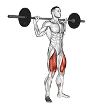
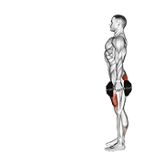
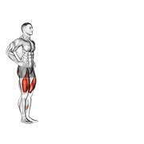
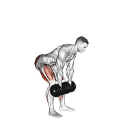
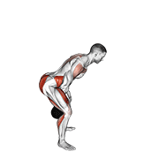
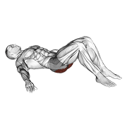
上肢推拉与肩（平衡挥拍肌）
| 动作 | 器材 | 练什么 | 注意 |
|---|---|---|---|
| 俯卧撑/卧推 | 自重/杠铃 | 胸、肱三头 | 推类1个动作就够 |
| 划船（俯身/坐姿） | 哑铃/弹力带/器械 | 背、肩后束——挥拍肌平衡 | 拉的量应≥推的量 |
| 面拉 | 弹力带/绳索 | 肩袖后侧、菱形肌 | 每周2-3次，每次3组 |
| 弹力带外旋 | 弹力带 | 肩袖外旋肌 | 轻负荷高次数15-20次，肘贴身 |
| 过顶推举 | 哑铃 | 肩前中束 | 有肩伤史慎做，先做面拉8周 |
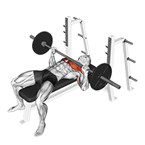
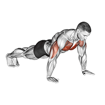
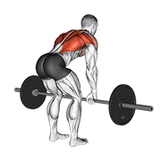
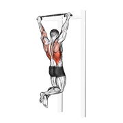
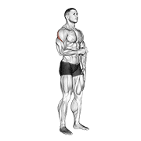
核心（不是仰卧起坐）
| 动作 | 练什么 | 组×次/秒 |
|---|---|---|
| 死虫式 | 抗伸展、腹肌离心控制 | 3×8-12/侧 |
| 鸟狗式 | 抗旋转、臀背协同 | 3×8-10/侧 |
| 侧桥 | 侧链、腰椎稳定 | 3×30-45秒/侧 |
| 帕洛夫推（Pallof Press） | 抗旋转——杀球转体不"泄力" | 3×10-12/侧 |
| 砍柴/举重式 | 旋转发力链（有基础后再练） | 3×8-10/侧 |

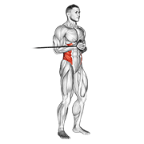
周安排：健身×羽毛球怎么排
原则一：下肢大重量与球场日隔开≥24小时。练腿第二天去打球，膝盖刹车力不够、反应变慢，受伤风险最高。原则二：同一天先做更重要的事——比赛前做技巧/战术，休赛期可先力量。原则三：连续高强度不超过3天。
方案A：每周2次健身（保底，业余推荐）
方案B：每周3次健身（想增肌/提升力量的球员）
赛前安排：正式比赛前3-4天停止下肢大重量与力竭组；赛前48小时只做轻激活（弹力带、空杆热身）；比赛周把健身压缩到1次全身轻量即可。比赛优先于健身。
渐进与记录
- 加量顺序：先加次数（每组目标次数的上限）→ 再加组数 → 最后加重量（每2周不超过5%）。三个变量每周只动一个。
- 留余力（RIR）：新手每组留2-3次余力，进阶留1次；不练到"力竭"——力竭恢复慢，影响次日球场表现。
- 记录：用训练日志（18）的代码速查（ME/SS/KS…）登记健身内容，每周日复盘一次：动作是否变形、恢复是否够。
- 组间休息：大重量2-3分钟、增肌60-90秒、核心与肩袖45-60秒。别刷手机，设倒计时。
有氧：别把羽毛球场当有氧
打球的强度是间歇冲刺，练不到线粒体耐力。想"第三局还有腿"，每周要2次低强度有氧：
| 类型 | 安排 | 强度 | 时长 |
|---|---|---|---|
| 低强度有氧（2区） | 球场日之外的休息日或上午 | 能说话但唱不了歌（约心率储备50-60%） | 30-45分钟 |
| 功率车/游泳 | 下肢酸胀日的好选择 | 同上 | 30-40分钟 |
| HIIT（可选） | 有经验者，非赛季 | 冲刺30秒×6-8组 | 总时长≤20分钟 |
减脂的真相：有氧是配角，热量缺口是主角（-300~-500kcal/天，蛋白质2.0-2.4g/kg）。只跑步不减力量，体重会掉、代谢也会掉。
热身与关节养护
1. 髋：自重深蹲10次 + 髋外展弹力带行走各10步
2. 肩：弹力带外旋2×15 + 猫驼式8次
3. 核心：死虫式10次/侧，激活腹压
4. 特定动作：今天练什么就先做2组轻重量热身组
完整的热身与整理流程见热身与整理（30）；肩袖保养动作与频率见力量体能（16）；睡眠是健身与打球共同的"补剂"，优先级最高，见睡眠优化（35）。
五个最常见的坑
| 坑 | 后果 | 正确做法 |
|---|---|---|
| 只练胸和手臂（"镜子肌"） | 挥拍肌更失衡，肩更痛 | 拉≥推，肩袖每周2-3次 |
| 练完腿第二天照常打比赛 | 膝盖/踝失控，表现暴跌 | 下肢大重量与高强度球场日隔24小时 |
| 每组都练到力竭 | 次日训练质量下降、易伤 | 留1-3次余力（RIR） |
| 节食减脂但不练力量 | 掉肌肉、代谢下降、反弹 | 减脂期照常力量训练 |
| 组间刷手机15分钟 | 训练密度≈0，心率凉透 | 倒计时，休息到点就练 |
起步承诺：每周2次×40分钟全身训练 + 2次有氧 + 每晚7小时睡眠，坚持8周——再回来评估（02 基线评估重测），你会看到下肢控制、肩部轻松度和体重的真实变化。
动图说明：示范动图素材 © Gym visual — gymvisual.com（180×180，经 hasaneyldrm/exercises-dataset 数据集再分发，按数据集 NOTICE 要求保留署名）。动图用于快速看懂动作轨迹，细节标准以本页文字要点与动作库说明为准；来源与逐文件对照见 images/exercises/README.md。